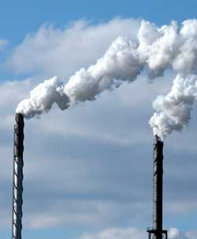

According to Lester Brown, president of theEarth PolicyInstitute, we should lower income tax rates and raise taxes onenvironmentally destructive activities such as burning fossilfuels, generating garbage and discharging toxic waste. This willincorporate the social costs of destructive products and servicesinto the marketplace, thereby creating incentives for morereponsible environmental actions.
Known as 'environmental tax reform,' shifting taxes to rewardenvironmentally responsible behavior (and punish those who actotherwise) is becoming popular in several European countries.
In Germany, a 1999 tax reform shifted taxes from labor to energyconsumption. By 2001, this plan lowered fuel use by 5 percent andaccelerated growth of renewable energy, creating 45,000 jobs by2003 in the wind industry alone ? a number that is projected torise to 103,000 by 2010. In Sweden, a tax restructuring plan willhelp the country become oil-free by 2025 by increasing taxes oncars and trucks, and electricity and fuel taxes.
Environmental tax shifting usually brings a double dividend. Inreducing taxes on income ? in effect, taxes on labor ? laborbecomes less costly, creating additional jobs while protecting theenvironment. Some 2,500 economists, including eight Nobel Prizewinners in economics, have endorsed this concept. By incorporatingthe true cost of environmentally destructive practices into our taxcode, we can create jobs while rewarding people and companies thatbehave responsibly.
To learn more about environmental tax reform, pick up a copy ofBrown's bookPlan B 2.0: Rescuing a Planet Under Stress and a Civilization inTrouble atMotherEarthShopping.com, or read anexcerpt from the book online.
|
 |
|
|